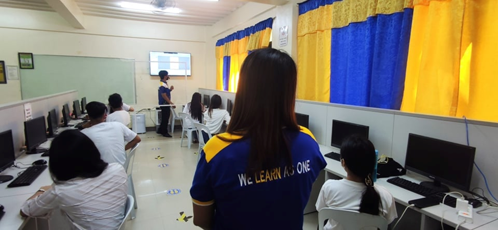
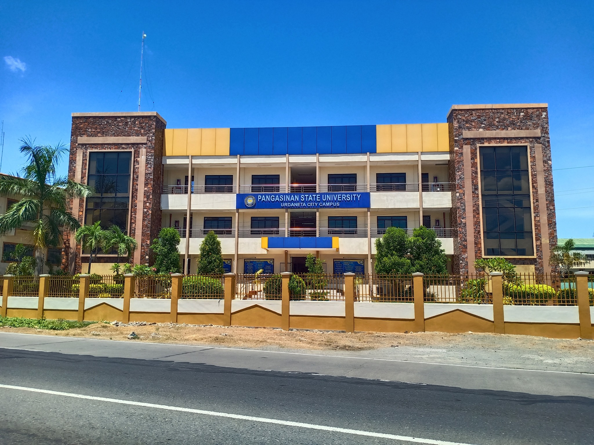
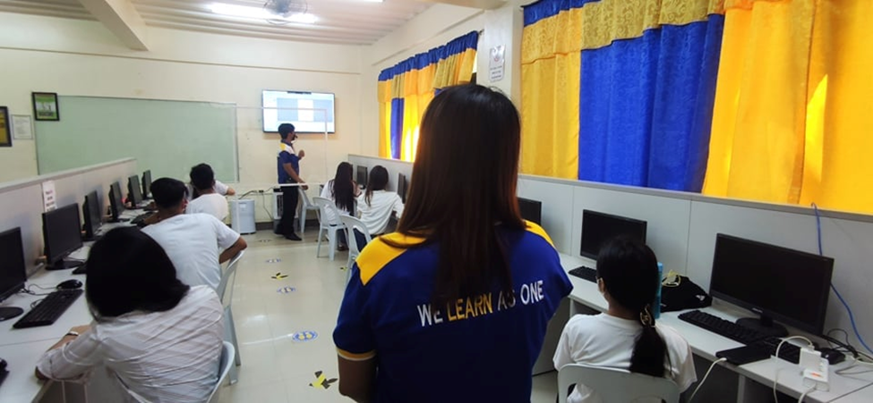
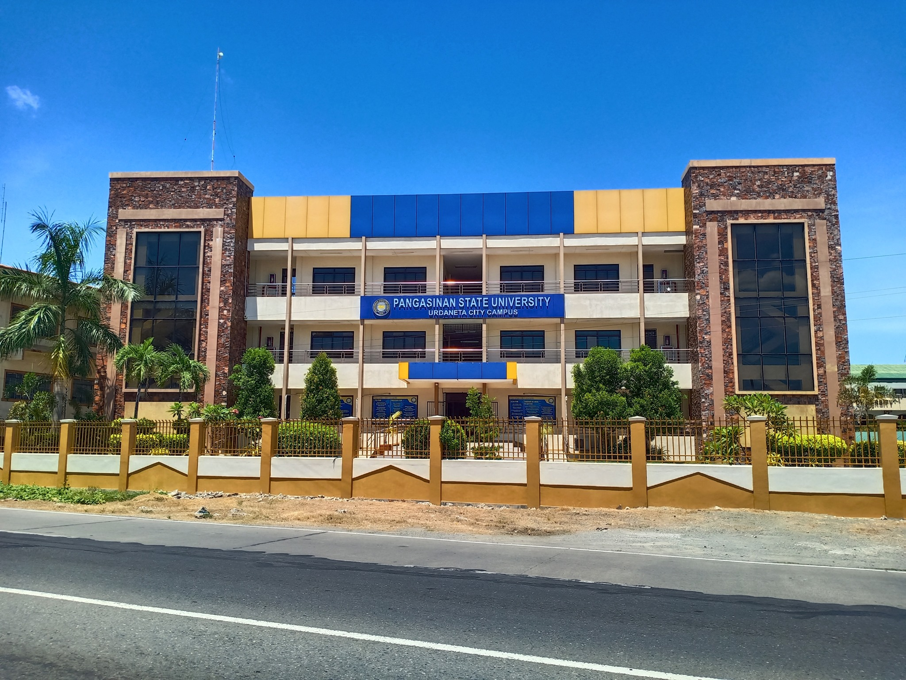

2nd CCRSICS - REGION I
At CCRISC, we strive to lead the way in research, teaching, and advocacy to enhance Information Technology Education across our region.
 



Welcome to
At CCRISC, we strive to lead the way in research, teaching, and advocacy to enhance Information Technology Education across our region.
We organize exciting competitions that challenge and inspire students, fostering creativity, teamwork, and real-world problem-solving skills.
We take a leadership role in driving research initiatives that contribute to the advancement of Information Technology Education.
Is a distinguished scholar holding a Doctorate in Information Technology. With profound expertise in the latest developments in the field of Information Technology Education (ITE), Dr. Galas stands as a beacon of knowledge and innovation in the academic realm.
A professor at Technological Institute of the Philippines, Manila, possesses a PhD in Computer Science from De La Salle University. His expertise lies in Artificial Intelligence, Data Science, and Data-driven Decision Making, fostering research innovation.
Commanding officer of the Cyber Battalion of the Philippine Army, is an expert in Cyber Security, Ethical Hacking, and Network Security.
a Filipino Digital Leadership Advocate, specializes in e-commerce, social media, and Internet marketing, with a particular focus on Bitcoin and Cryptocurrency.